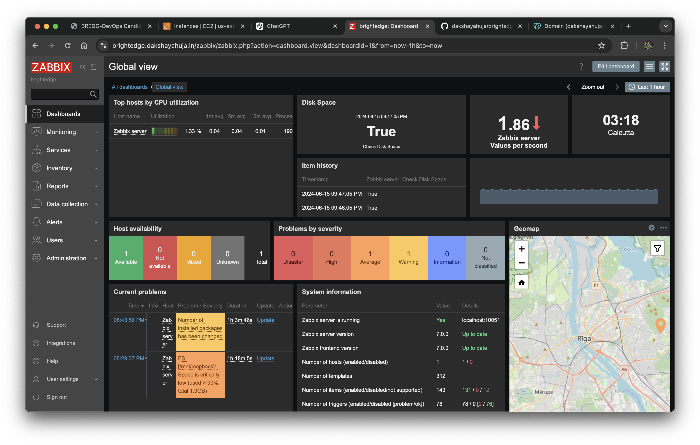

BrightEdge - Zabbix Monitoring Solution Documentation
Summary
This documentation outlines the steps to set up a Zabbix monitoring solution that checks disk space usage and alerts when any filesystem has less than 20% free space. The solution involves writing Linux and Python scripts, configuring the Zabbix agent and server, and ensuring proper permissions. The Zabbix server has been deployed on an AWS VM using CentOS Stream 9.
The Zabbix dashboard can be accessed at https://brightedge.dakshayahuja.in/ using the credentials:
Username - Admin
Password - zabbix
Steps
1. Write a Linux Shell Script
Write a Linux shell script that determines if any of the mounted file systems have less than 20% free disk space.
#!/bin/bash
# Check all mounted file systems
df -h | awk '{if (NR!=1 && $5+0 > 80) print $0}' > /tmp/disk_usage_report.txt
# If any file system is above 80% usage, alert
if [ -s /tmp/disk_usage_report.txt]; then
echo "Disk space usage is above 80%"
exit 1
else
echo "Disk space usage is under control"
exit 0
fi
2. Write a Python Equivalent Script
Write a Python script that performs the same check.
import subprocess
def check_disk_space():
result = subprocess.run(['df', '-h'], capture_output=True, text=True)
lines = result.stdout.splitlines()
for line in lines[1:]:
parts = line.split()
usage = int(parts[4].strip('%'))
if usage > 80:
print("Disk space usage is above 80%")
return 1
print("Disk space usage is under control")
return 0
if __name__ == "__main__":
exit(check_disk_space())
3. Create a Python Script for Zabbix
Create a Python script named zabbix_server.py that checks disk space usage and returns "True" if any filesystem has less than 20% free space, otherwise returns "False".
#!/usr/bin/env python3
import subprocess
def check_disk_space():
result = subprocess.run(['df', '-h'], capture_output=True, text=True)
lines = result.stdout.splitlines()
for line in lines[1:]:
parts are line.split()
usage is int(parts[4].strip('%'))
if usage > 80:
return "True"
return "False"
if __name__ == "__main__":
print(check_disk_space())
4. Set Execute Permissions for the Python Script
Ensure the Python script has execute permissions:
chmod +x /home/ec2-user/zabbix_server.py
chown zabbix:zabbix /home/ec2-user/zabbix_server.py
5. Configure Sudoers for Zabbix User
Edit the sudoers file to allow the Zabbix user to run the script without a password:
sudo visudo
Add the following line:
zabbix ALL=(ALL) NOPASSWD: /usr/bin/env python3 /home/ec2-user/zabbix_server.py
6. Update Zabbix Agent Configuration
Edit the Zabbix agent configuration file:
sudo vim /etc/zabbix/zabbix_agentd.conf
Add or update the following line:
UserParameter=disk.space.check,sudo /usr/bin/env python3 /home/ec2-user/zabbix_server.py
7. Restart the Zabbix Agent
Restart the Zabbix agent to apply the changes:
sudo systemctl restart zabbix-agent
8. Verify the Configuration
- Run the script manually to ensure it returns "True" or "False":
sudo -u zabbix /usr/bin/env python3 /home/ec2-user/zabbix_server.py
- Check the Zabbix agent logs for any error messages:
sudo tail -f /var/log/zabbix/zabbix_agentd.log
- In the Zabbix frontend, configure an item to use the key
disk.space.checkand set the type to "Text". Verify that it retrieves the correct value from the agent.
9. Temporarily Disable SELinux
If you encounter permission issues, temporarily disable SELinux to see if it resolves the problem:
sudo setenforce 0
10. Creating a Disk with More Than 80% Space Utilized
To test the script, we created a loopback device with more than 80% disk usage:
- Create a Loopback File:
sudo dd if=/dev/zero of=/home/ec2-user/loopback.img bs=1M count=2048
- Set Up the Loopback Device:
sudo losetup /dev/loop0 /home/ec2-user/loopback.img
- Create a Filesystem on the Loopback Device:
sudo mkfs.ext4 /dev/loop0
- Mount the Loopback Device:
sudo mkdir /mnt/loopback
sudo mount /dev/loop0 /mnt/loopback
- Fill the Loopback Device:
sudo dd if=/dev/zero of=/mnt/loopback/largefile bs=1M count=1900
Screenshots
1. Script Execution

2. Dashboard Overview
3. Zabbix Item Configuration

4. Zabbix Test Item